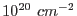

The energy bands (coded in the pre-defined color table) for the red, green and blue channels of the true color image have been chosen so that a power law spectrum with photon spectral index 1.7, absorbed by galactic gas with neutral hydrogen column density of , results in approximately the same number of counts in each band.
| Channel energy Range | |
| Red | 300-700 eV |
| Green | 700-1200 eV |
| blue | 1200-7000 eV |
Please note: The actual generation of the red, green, and blue component images is done through the task evselect. etruecolor therefore inherits some of evselect's image extraction parameters which allows to control the image generation process, e.g., binning, windowing, etc. etruecolor also assumes that all the input event files have the same astrometry origin.
The default value for the image scale creation is 4 arcsec/pixel, that is equivalent to aximagebinsize equals to 80.